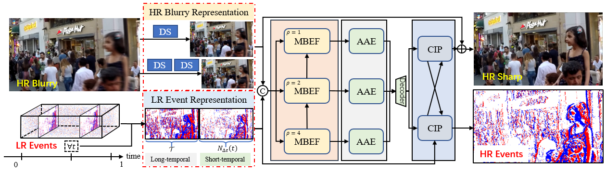

CrossZoom: Simultaneously Motion Deblurring and Event Super-Resolving
Chi Zhang1,
Xiang Zhang2,
Mingyuan Lin1,
Cheng Li3,
Chu He1,
Wen Yang1,
Gui-Song Xia4,
Lei Yu1,*
1. School of Electronic Information, Wuhan University, Wuhan 430079, China
2. Computer Vision Lab of ETH Zurich, Switzerland
3. Huawei Noah's Ark Lab, Shenzhen 518000, China
4. School of Computer Science, Wuhan University, Wuhan 430079, China
Introduction
Even though the collaboration between traditional and neuromorphic event cameras brings prosperity to frame-event based vision applications, the performance is still confined by the resolution
gap crossing two modalities in both spatial and temporal domains. This paper is devoted to bridging the gap by increasing the temporal resolution for images, i.e., Motion Deblurring (MD), and the spatial
resolution for events, i.e., Event Super-Resolving (ESR), respectively. To this end, we introduce CrossZoom, a novel unified neural Network (CZ-Net) to jointly recover sharp latent sequences
within the exposure period of a blurry input and the corresponding High-Resolution (HR) events. Specifically, we present multi-scale blur-event fusion architectures that leverage the scale-variant
properties and effectively fuse cross-modality information to achieve cross-enhancement. Attention-based adaptive enhancement and cross-interaction prediction modules are devised to alleviate the
distortions inherent in Low-Resolution (LR) events and enhance the final results through the prior blur-event complementary information. Furthermore, we propose a new dataset containing HR sharp
image sequences and the corresponding real LR event streams to facilitate future research. Extensive qualitative and quantitative experiments on synthetic and real-world datasets demonstrate the
effectiveness and robustness of the proposed method.
